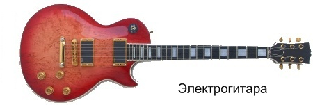

Электрогитара
Об этих гитарах я расскажу подробнее, поскольку с её появлением в мире музыки произошёл настоящий фурор. А появилась она в 1930 г., когда уволенный из национальной компании струнных инструментов (National String Instrument Company) Джордж Бишамп (George Beauchamp) изобрёл электрический звукосниматель. Принцип был следующий: проводник (в нашем случае струна), колеблющийся в поле, создаваемом одним или несколькими постоянными магнитами, производит изменения в этом поле, которое в свою очередь производит переменный ток в проволоке намотанной вокруг этих магнитов. Сила электрического тока пропорциональна амплитуде колебаний проводника в магнитном поле. Этот же принцип лежит в основе электромоторов, генераторов, игл фонографа и акустических динамиков. После чего Бишамп совместно с Гарри Уотсоном (Harry Watson), управляющим завода National String Instrument Company при помощи ручных инструментов всего за несколько часов создал первую в мире электрогитару. Ее назвали «сковорода» (Frying Pan).

С этого момента электрогитара начала своё шествие по планете, за прошедшее время она приобрела более совершенную форму и получила множество технических улучшений. Отличительная особенность современной электрогитары это цельный тонкий корпус, в котором почти нет пустого пространства. Звук снимается датчиками - звукоснимателями и преобразуется в электрический сигнал, который для прослушивания необходимо усилить. На такой гитаре нельзя играть без усилителя. На электрогитарах помимо всего часто устанавливается несколько различных звукоснимателей, для того чтобы разнообразить тембр звука, а также регуляторы громкости и тембра.